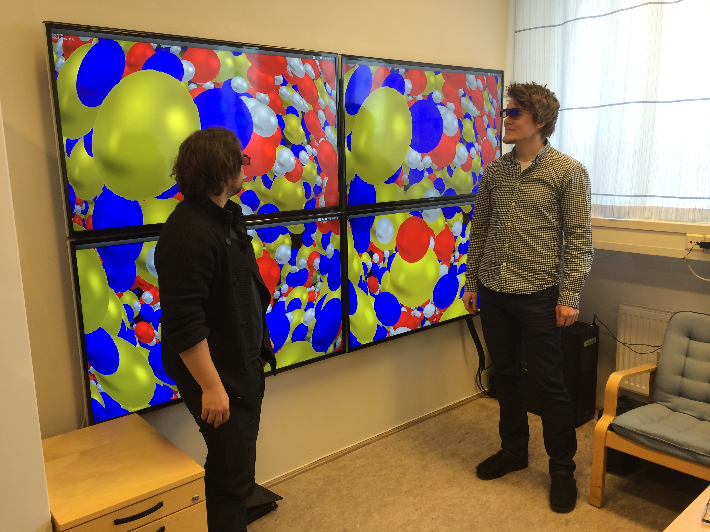
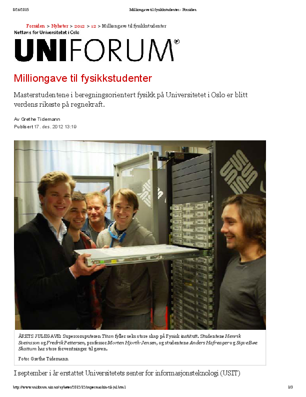
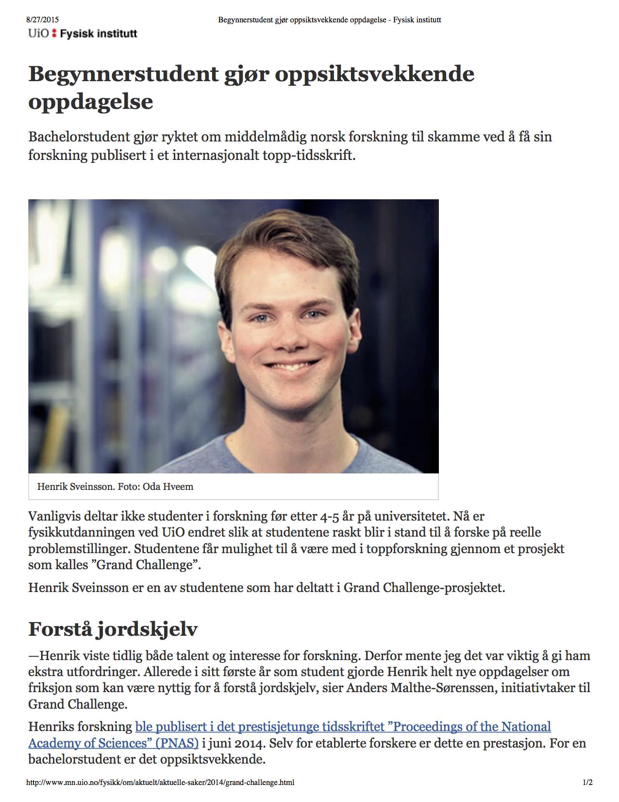
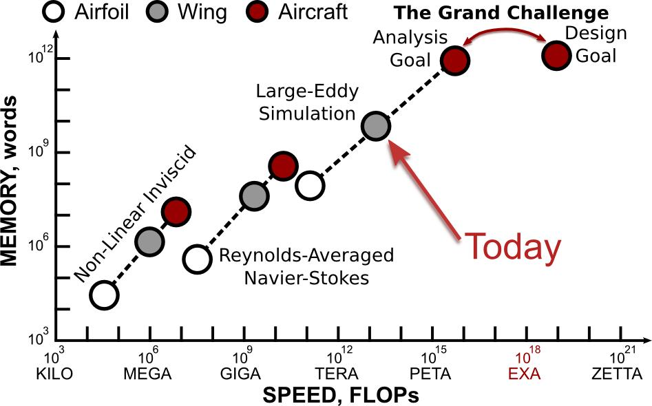
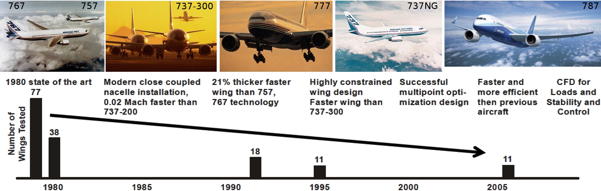

Education for the future
Morten Hjorth-Jensen [1, 2]
Hans Petter Langtangen [3]
Anders Malthe-Sørenssen [1]
[1] Department of Physics, University of Oslo
[2] Department of Physics and Astronomy, Michigan State University, USA
[3] Department of Informatics, University of Oslo and Simula Research Laboratory
September 2 2015,
How we perceive the role of education, present and future
The main topics of this talk are:
The role of computations, from education to society
Computations of almost all systems in science are central to our
basic understanding of nature and technological advances.
The increase in computational power,
improved algorithms for solving problems in science as well as access
to high-performance facilities, allow researchers nowadays to study
complicated systems across many length and energy scales. Applications
span from studying quantum physical systems in nanotechnology and the
characteristics of new materials or subamotic physics at its smallest
length scale, to simulating galaxies and the evolution of the universe.
Simulations are key to understanding
cancer treatment and how the brain works,
predicting climate changes and this week's weather,
simulating natural disasters, semi-conductor devices,
quantum computers, as well as assessing risk in the insurance and
financial industry.
What do we mean with computing and computational science and physics?
Computing means solving scientific problems using computers. It covers numerical as well as symbolic computing. Computing is also about developing an understanding of the scientific process by enhancing the algorithmic thinking when solving problems.
And this competence is about:
- derivation, verification, and implementation of algorithms
- understanding what can go wrong with algorithms
- overview of important, known algorithms
- understanding how algorithms are used to solve complicated problems
- reproducible science and ethics
- algorithmic thinking for gaining deeper insights about scientific problems
All these elements (and many more) aid students in maturing and gaining a better understanding of the scientific process.
Modeling and computations as a way to enhance algorithminc thinking
Algorithmic thinking as a way to
- Enhance instruction based teaching
- Introduce research-based teaching from day one
- Trigger further insights in math and other disciplines
- Validation and verification of scientific results, with the possibility to emphasize ethical aspects as well. Version control is central.
- Good working practices from day one.
Algorithm : A finite set of unambiguous instructions that, given some set of initial conditions, can be performed in a prescribed sequence to achieve a certain goal.
Computing and research-based education
A computational approach allows us to introduce research concepts and engage students in research from day one.
How do we define it?
It is coupled to a direct participation in actual research and builds upon established
knowledge and insights about scientific methods.
Research-based education
What should the education contain?
The standard situation we meet at an almost daily basis:
- Theory+experiment+simulation is almost the norm in research and industry
- To be able to model complex systems with no simple answers. Solve real problems.
- Emphasis on insight and understanding of fundamental principles and laws in the Sciences.
- Be able to visualize, present, discuss, interpret and come with a critical analysis of the results, and develop a sound ethical attitude to own and other's work.
Our education should reflect this. An example where this takes place is the
Computational Physics group at UiO. How can we implement in a systematic was a research-based education?
A particular strength of physics students is their ability to pose and
solve problems that combine physical insights with mathematical tools
and now also computational skills. This provides a unique combination
of applied and theoretical knowledge and skills. These features are invaluable
for the development of multi-disciplinary educational and research programs.
Develop a social, scientific and learning environment
- The main aim is that students should realize their own potentials and creative power
- The computational physics group includes bachelor, master of science and doctoral students
- Project oriented work where students develop and mature their own ideas, with an individually tailored approach to each students
- Office space with desktops to every student and large common room for recreational activities (meals, common lunches, gaming, watching movies etc etc)
- Many students collaborate on similar thesis topics and publish in top scientific articles
Developing a good learning environment
- Our students have made significant contributions to the Computing in Science Education (UiO education prize in 2011) by developing exercises and participating in educational projects at the MN faculty
- Our students have also developed educational tools and applications for understanding complicated physical problems
- The students keep shaping and developing the scientific, social and pedagogical activities of the group
- A group of PhD students is now developing new textbooks for Computational Life Science
- During the last ten years more than 60 students have finalized their master theses in computational physics and almost 60% have continued with PhD studies
- Many students don't want to leave the group after finishing their studies
Investing in equipment for students
Using research funds for visualization tools.

Building a supercomputing cluster
We got (for free) the old supercomputer at UiO (TITAN).

Undergraduate student publishes in PNAS
Using research funds for visualization tools.

The future: Multiscale modeling is the big open research question
Present and future problems, unlike traditional
science and engineering, involve complex systems with many distinct
physical processes. The wide open research topic of this century, both
in industry and at universities, is how to effectively couple
processes across different length and energy scales. Progress will
rely on a multi-disciplinary approach and therefore the need for
multi-disciplinary educational and research programs.
We need to foster candidates with the right
multi-disciplinary background and computational thinking for
understanding present and future simulation technologies and their challenges.
Examples of large scale simulations
Fluid dynamical simulations central in air industry. Typical university courses which are taught address the physics of the lower left corner.

Testing plane wings via massive numerical simulations
Fluid dynamical simulations central in air industry, wings tested.

The challenges for the future
We need to educate the next generation of
science students with the knowledge, skills, and values needed to pose
and solve current and new scientific, technological and societal
challenges.
This will lay the foundation for cross-disciplinary
educational, research and innovation activities. It will contribute to building a common cross-disciplinary
approach to key strategic initiatives, with examples like Energy, Materials, Life Science, and Enabling Technologies.
A new type of students
Candidates who are capable of modeling and understanding complicated
systems, are in short supply in society. The
computational methods and approaches to scientific problems students learn
when working on their thesis projects are very similar to the methods
they will use in later stages of their careers. To handle large
numerical projects demands structured thinking and good analytical
skills and a thorough understanding of the problems to be solved. This
knowledge makes the students unique on the labor market, a labor market which in the years to come will experience heavy automatization and massive loss of jobs.
Computations (mastering and developing) will play a central role in almost all aspects of scientific investigations and technological innovation
What we should do: create the Department for Computational Science
What we have and where we can arrive.
- UiO's strength in computational science (education and research) will play an important role in determining new research and educational directions
- Exploiting this strength has the potential to make UiO a center of excellence for scientific innovation
How to achieve it.
- Establish a new center/department with focus on computational science and its applications to a wide range of fields (natural science, medicine, social sciences, humanities, applied research etc)
- Hire ten (or more) young professors (age \( < 40 \)) dedicated to innovative research and education where computations play a central role
- Establish another ten professorships (or more) with shared positions (position percentage is flexible) between the new department and the department of appartanence (physics, chemistry, etc etc).
The process must start now in order not to loose momentum.
The Computing in Science Education project, UiO educational prize in 2011
The insights, ideas and thoughts presented here, would have been impossible or difficult to gain without discussions, exchange of ideas and much more over many years with colleagues involved in the Computing in Science Education project at UiO. These dear friends and colleagues are
- Knut Mørken, Mathematics
- Arnt Inge Vistnes, Physics
- Oyvind Ryan, Mathematics
- Solveig Kristensen, Dean of Education, MN faculty
- Hanne Sølna, Director of studies MN faculty